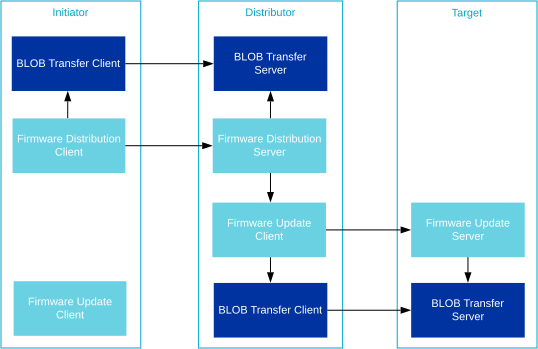
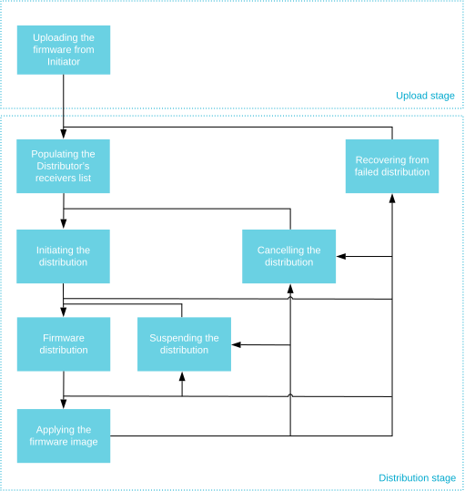

Device Firmware Update (DFU)
Bluetooth Mesh supports the distribution of firmware images across a mesh network. The Bluetooth mesh DFU subsystem implements the Bluetooth Mesh Device Firmware Update Model specification version 1.0.
Bluetooth Mesh DFU implements a distribution mechanism for firmware images, and does not put any restrictions on the size, format or usage of the images. The primary design goal of the subsystem is to provide the qualifiable parts of the Bluetooth Mesh DFU specification, and leave the usage, firmware validation and deployment to the application.
The DFU specification is implemented in the Zephyr Bluetooth Mesh DFU subsystem as three separate models:
Overview
DFU roles
The Bluetooth Mesh DFU subsystem defines three different roles the mesh nodes have to assume in the distribution of firmware images:
- Target node
Target node is the receiver and user of the transferred firmware images. All its functionality is implemented by the Firmware Update Server model. A transfer may be targeting any number of Target nodes, and they will all be updated concurrently.
- Distributor
The Distributor role serves two purposes in the DFU process. First, it’s acting as the Target node in the Upload Firmware procedure, then it distributes the uploaded image to other Target nodes as the Distributor. The Distributor does not select the parameters of the transfer, but relies on an Initiator to give it a list of Target nodes and transfer parameters. The Distributor functionality is implemented in two models, Firmware Distribution Server and Firmware Update Client. The Firmware Distribution Server is responsible for communicating with the Initiator, and the Firmware Update Client is responsible for distributing the image to the Target nodes.
- Initiator
The Initiator role is typically implemented by the same device that implements the Bluetooth Mesh Provisioner and Configurator roles. The Initiator needs a full overview of the potential Target nodes and their firmware, and will control (and initiate) all firmware updates. The Initiator role is not implemented in the Zephyr Bluetooth Mesh DFU subsystem.

DFU roles and the associated Bluetooth Mesh models
Bluetooth Mesh applications may combine the DFU roles in any way they’d like, and even take on multiple instances of the same role by instantiating the models on separate elements. For instance, the Distributor and Initiator role can be combined by instantiating the Firmware Update Client on the Initiator node and calling its API directly.
It’s also possible to combine the Initiator and Distributor devices into a single device, and replace the Firmware Distribution Server model with a proprietary mechanism that will access the Firmware Update Client model directly, e.g. over a serial protocol.
Note
All DFU models instantiate one or more BLOB Transfer models, and may need to be spread over multiple elements for certain role combinations.
Stages
The Bluetooth Mesh DFU process is designed to act in three stages:
- Upload stage
First, the image is uploaded to a Distributor in a mesh network by an external entity, such as a phone or gateway (the Initiator). During the Upload stage, the Initiator transfers the firmware image and all its metadata to the Distributor node inside the mesh network. The Distributor stores the firmware image and its metadata persistently, and awaits further instructions from the Initiator. The time required to complete the upload process depends on the size of the image. After the upload completes, the Initiator can disconnect from the network during the much more time-consuming Distribution stage. Once the firmware has been uploaded to the Distributor, the Initiator may trigger the Distribution stage at any time.
- Firmware Capability Check stage (optional)
Before starting the Distribution stage, the Initiator may optionally check if Target nodes can accept the new firmware. Nodes that do not respond, or respond that they can’t receive the new firmware, are excluded from the firmware distribution process.
- Distribution stage
Before the firmware image can be distributed, the Initiator transfers the list of Target nodes and their designated firmware image index to the Distributor. Next, it tells the Distributor to start the firmware distributon process, which runs in the background while the Initiator and the mesh network perform other duties. Once the firmware image has been transferred to the Target nodes, the Distributor may ask them to apply the firmware image immediately and report back with their status and new firmware IDs.
Firmware images
All updatable parts of a mesh node’s firmware should be represented as a firmware image. Each Target node holds a list of firmware images, each of which should be independently updatable and identifiable.
Firmware images are represented as a BLOB (the firmware itself) with the following additional information attached to it:
- Firmware ID
The firmware ID is used to identify a firmware image. The Initiator node may ask the Target nodes for a list of its current firmware IDs to determine whether a newer version of the firmware is available. The format of the firmware ID is vendor specific, but generally, it should include enough information for an Initiator node with knowledge of the format to determine the type of image as well as its version. The firmware ID is optional, and its max length is determined by
CONFIG_BT_MESH_DFU_FWID_MAXLEN.- Firmware metadata
The firmware metadata is used by the Target node to determine whether it should accept an incoming firmware update, and what the effect of the update would be. The metadata format is vendor specific, and should contain all information the Target node needs to verify the image, as well as any preparation the Target node has to make before the image is applied. Typical metadata information can be image signatures, changes to the node’s Composition Data and the format of the BLOB. The Target node may perform a metadata check before accepting incoming transfers to determine whether the transfer should be started. The firmware metadata can be discarded by the Target node after the metadata check, as other nodes will never request the metadata from the Target node. The firmware metadata is optional, and its maximum length is determined by
CONFIG_BT_MESH_DFU_METADATA_MAXLEN.The Bluetooth Mesh DFU subsystem in Zephyr provides its own metadata format (
bt_mesh_dfu_metadata) together with a set of related functions that can be used by an end product. The support for it is enabled using theCONFIG_BT_MESH_DFU_METADATAoption. The format of the metadata is presented in the table below.
Field |
Size (Bytes) |
Description |
|---|---|---|
New firmware version |
8 B |
1 B: Major version 1 B: Minor version 2 B: Revision 4 B: Build number |
New firmware size |
3 B |
Size in bytes for a new firmware |
New firmware core type |
1 B |
Bit field: Bit 0: Application core Bit 1: Network core Bit 2: Applications specific BLOB. Other bits: RFU |
Hash of incoming composition data |
4 B (Optional) |
Lower 4 octets of AES-CMAC (app-specific-key, composition data). This field is present, if Bit 0 is set in the New firmware core type field. |
New number of elements |
2 B (Optional) |
Number of elements on the node after firmware is applied. This field is present, if Bit 0 is set in the New firmware core type field. |
Application-specific data for new firmware |
<variable> (Optional) |
Application-specific data to allow application to execute some vendor-specific behaviors using this data before it can respond with a status message. |
Note
The AES-CMAC algorithm serves as a hashing function with a fixed key and is not used for encryption in Bluetooth Mesh DFU metadata. The resulting hash is not secure since the key is known.
- Firmware URI
The firmware URI gives the Initiator information about where firmware updates for the image can be found. The URI points to an online resource the Initiator can interact with to get new versions of the firmware. This allows Initiators to perform updates for any node in the mesh network by interacting with the web server pointed to in the URI. The URI must point to a resource using the
httporhttpsschemes, and the targeted web server must behave according to the Firmware Check Over HTTPS procedure defined by the specification. The firmware URI is optional, and its max length is determined byCONFIG_BT_MESH_DFU_URI_MAXLEN.Note
The out-of-band distribution mechanism is not supported.
Firmware effect
A new image may have the Composition Data Page 0 different from the one allocated on a Target node.
This may have an effect on the provisioning data of the node and how the Distributor finalizes the
DFU. Depending on the availability of the Remote Provisioning Server model on the old and new image,
the device may either boot up unprovisioned after applying the new firmware or require to be
re-provisioned. The complete list of available options is defined in bt_mesh_dfu_effect:
BT_MESH_DFU_EFFECT_NONEThe device stays provisioned after the new firmware is programmed. This effect is chosen if the composition data of the new firmware doesn’t change.
BT_MESH_DFU_EFFECT_COMP_CHANGE_NO_RPRThis effect is chosen when the composition data changes and the device doesn’t support the remote provisioning. The new composition data takes place only after re-provisioning.
BT_MESH_DFU_EFFECT_COMP_CHANGEThis effect is chosen when the composition data changes and the device supports the remote provisioning. In this case, the device stays provisioned and the new composition data takes place after re-provisioning using the Remote Provisioning models.
BT_MESH_DFU_EFFECT_UNPROVThis effect is chosen if the composition data in the new firmware changes, the device does not support the remote provisioning, and the new composition data takes effect after applying the firmware. The effect can also be chosen, if it is necessary to unprovision the device for application-specific reasons.
When the Target node receives the Firmware Update Firmware Metadata Check message, the Firmware
Update Server model calls the bt_mesh_dfu_srv_cb.check callback, the application can
then process the metadata and provide the effect value. If the effect is
BT_MESH_DFU_EFFECT_COMP_CHANGE, the application must call functions
bt_mesh_comp_change_prepare() and bt_mesh_models_metadata_change_prepare() to
prepare the Composition Data Page and Models Metadata Page contents before applying the new
firmware image. See Composition Data and Models Metadata for more
information.
DFU procedures
The DFU protocol is implemented as a set of procedures that must be performed in a certain order.
The Initiator controls the Upload stage of the DFU protocol, and all Distributor side handling of the upload subprocedures is implemented in the Firmware Distribution Server.
The Distribution stage is controlled by the Distributor, as implemented by the Firmware Update Client. The Target node implements all handling of these procedures in the Firmware Update Server, and notifies the application through a set of callbacks.

DFU stages and procedures as seen from the Distributor
Uploading the firmware
The Upload Firmware procedure uses the BLOB Transfer models to transfer the firmware image from the Initiator to the Distributor. The Upload Firmware procedure works in two steps:
The Initiator generates a BLOB ID, and sends it to the Distributor’s Firmware Distribution Server along with the firmware information and other input parameters of the BLOB transfer. The Firmware Distribution Server stores the information, and prepares its BLOB Transfer Server for the incoming transfer before it responds with a status message to the Initiator.
The Initiator’s BLOB Transfer Client model transfers the firmware image to the Distributor’s BLOB Transfer Server, which stores the image in a predetermined flash partition.
When the BLOB transfer finishes, the firmware image is ready for distribution. The Initiator may upload several firmware images to the Distributor, and ask it to distribute them in any order or at any time. Additional procedures are available for querying and deleting firmware images from the Distributor.
The following Distributor’s capabilities related to firmware images can be configured using the configuration options:
CONFIG_BT_MESH_DFU_SLOT_CNT: Amount of image slots available on the device.CONFIG_BT_MESH_DFD_SRV_SLOT_MAX_SIZE: Maximum allowed size for each image.CONFIG_BT_MESH_DFD_SRV_SLOT_SPACE: Available space for all images.
Populating the Distributor’s receivers list
Before the Distributor can start distributing the firmware image, it needs a list of Target nodes to send the image to. The Initiator gets the full list of Target nodes either by querying the potential targets directly, or through some external authority. The Initiator uses this information to populate the Distributor’s receivers list with the address and relevant firmware image index of each Target node. The Initiator may send one or more Firmware Distribution Receivers Add messages to build the Distributor’s receivers list, and a Firmware Distribution Receivers Delete All message to clear it.
The maximum number of receivers that can be added to the Distributor is configured through the
CONFIG_BT_MESH_DFD_SRV_TARGETS_MAX configuration option.
Initiating the distribution
Once the Distributor has stored a firmware image and received a list of Target nodes, the Initiator may initiate the distribution procedure. The BLOB transfer parameters for the distribution are passed to the Distributor along with an update policy. The update policy decides whether the Distributor should request that the firmware is applied on the Target nodes or not. The Distributor stores the transfer parameters and starts distributing the firmware image to its list of Target nodes.
Firmware distribution
The Distributor’s Firmware Update Client model uses its BLOB Transfer Client model’s broadcast subsystem to communicate with all Target nodes. The firmware distribution is performed with the following steps:
The Distributor’s Firmware Update Client model generates a BLOB ID and sends it to each Target node’s Firmware Update Server model, along with the other BLOB transfer parameters, the Target node firmware image index and the firmware image metadata. Each Target node performs a metadata check and prepares their BLOB Transfer Server model for the transfer, before sending a status response to the Firmware Update Client, indicating if the firmware update will have any effect on the Bluetooth Mesh state of the node.
The Distributor’s BLOB Transfer Client model transfers the firmware image to all Target nodes.
Once the BLOB transfer has been received, the Target nodes’ applications verify that the firmware is valid by performing checks such as signature verification or image checksums against the image metadata.
The Distributor’s Firmware Update Client model queries all Target nodes to ensure that they’ve all verified the firmware image.
If the distribution procedure completed with at least one Target node reporting that the image has been received and verified, the distribution procedure is considered successful.
Note
The firmware distribution procedure only fails if all Target nodes are lost. It is up to the Initiator to request a list of failed Target nodes from the Distributor and initiate additional attempts to update the lost Target nodes after the current attempt is finished.
Suspending the distribution
The Initiator can also request the Distributor to suspend the firmware distribution. In this case, the Distributor will stop sending any messages to Target nodes. When the firmware distribution is resumed, the Distributor will continue sending the firmware from the last successfully transferred block.
Applying the firmware image
If the Initiator requested it, the Distributor can initiate the Apply Firmware on Target Node procedure on all Target nodes that successfully received and verified the firmware image. The Apply Firmware on Target Node procedure takes no parameters, and to avoid ambiguity, it should be performed before a new transfer is initiated. The Apply Firmware on Target Node procedure consists of the following steps:
The Distributor’s Firmware Update Client model instructs all Target nodes that have verified the firmware image to apply it. The Target nodes’ Firmware Update Server models respond with a status message before calling their application’s
applycallback.The Target node’s application performs any preparations needed before applying the transfer, such as storing a snapshot of the Composition Data or clearing its configuration.
The Target node’s application swaps the current firmware with the new image and updates its firmware image list with the new firmware ID.
The Distributor’s Firmware Update Client model requests the full list of firmware images from each Target node, and scans through the list to make sure that the new firmware ID has replaced the old.
Note
During the metadata check in the distribution procedure, the Target node may have reported that it will become unprovisioned after the firmware image is applied. In this case, the Distributor’s Firmware Update Client model will send a request for the full firmware image list, and expect no response.
Cancelling the distribution
The firmware distribution can be cancelled at any time by the Initiator. In this case, the
Distributor starts the cancelling procedure by sending a cancelling message to all Target nodes. The
Distributor waits for the response from all Target nodes. Once all Target nodes have replied, or the
request has timed out, the distribution procedure is cancelled. After this the distribution
procedure can be started again from the Firmware distribution section.
API reference
This section lists the types common to the Device Firmware Update mesh models.